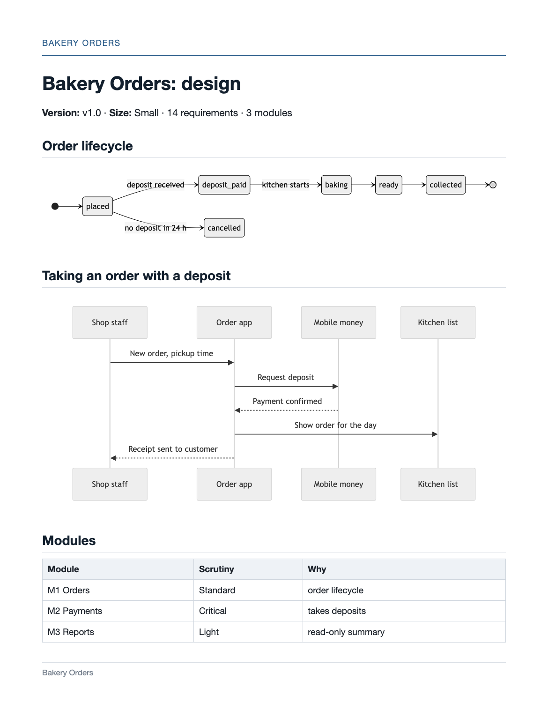
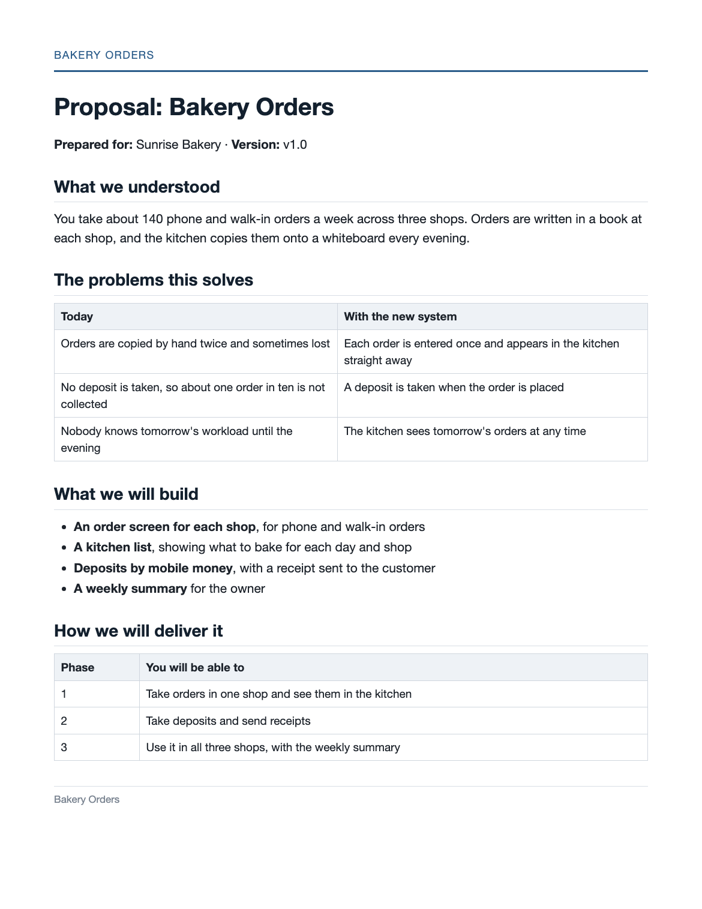

Inferred from merges
A work package starts when its branch appears and is done when the branch or pull request is merged. You can override any of it.
ATLAS is an open-source plugin for Claude Code and Codex. It turns client meetings into a signed-off scope, a design and a plan, tracks the real build from git, and hands over with a complete record.
“We lose about one order in ten.”
Owner · meeting 1 · 00:14:32Record the client meeting, or bring your notes. Alice reads them and writes each requirement with the moment it was said, so every line of the scope can be traced to its source.
Each stage belongs to one agent and ends at a check. The checks run by themselves; you are asked only for decisions.
Atlas creates the project and asks for the client, the size and the code repository.
Each agent is a skill you can also run alone. They share the same IDs, the same project folder and the same log, and leave each other notes, so you never carry questions between them.
Reads new commits, pull requests and CI, runs the checks, and tells you what needs attention and what comes next.
Status, timeline, change requests, releases
Turns meeting transcripts and documents into the source of truth. She asks you about anything unclear and never guesses.
PRD, client proposal, client questions, updates, handover pack
Designs the system in proportion to its size and proposes how much scrutiny each module needs.
Architecture, data model, acceptance criteria, modules
Turns the design into phases and work packages, and audits code that already exists.
Plan, briefs for coding agents, audit
Writes each phase's tests from its acceptance criteria and reads results from your test reports.
Test plan, client acceptance script, go-live checklist
Reviews every change to a Critical module and explains any check that does not pass.
Security reviews, waivers with a recorded reason
Every document is written from the one before it, and each statement can be traced back to the meeting where it was said.


Teammates need nothing installed. Atlas reads what they push and asks you only about what it cannot match.
A work package starts when its branch appears and is done when the branch or pull request is merged. You can override any of it.
Verified means tests or CI pass. Likely means the code exists. Claimed means somebody only said so. Client updates never call claimed work done.
Every event is chained to the one before it, like commits in git. atlas verify-log detects any change to the past.
Payments and logins get heavy checking; a settings page does not. Stark proposes a level for each module with a reason, and you confirm them all in one command.
| Lightcontent, settings, simple lists | Standardnormal business features | Criticalmoney, logins, personal data | |
|---|---|---|---|
| Design | Use cases and acceptance criteria | Plus data model, flows and API contracts | Plus edge cases, failure and rollback behaviour, threat notes |
| Plan | 1–2 work packages | Normal work packages | Small work packages that end in a review |
| Done means | Code exists | Tests pass | Tests pass, each criterion checked, you sign off |
| Tests | Smoke test and a client check | Unit and integration tests | Plus edge, failure, permission and end-to-end tests |
| Checks | Basic | Standard list | Full list and a security review of every change |
You need git, Python 3.9 or newer, and Claude Code or Codex. Chrome or Edge makes the client PDFs; the GitHub CLI is needed only for GitHub storage.
claude plugin marketplace add jjibrah/atlas-plugin
claude plugin install atlas@atlasStart a new session, then type /atlas or say “set up atlas”.
codex plugin marketplace add jjibrah/atlas-plugin
codex plugin add atlas@atlasStart a new session, then mention $atlas or say “set up atlas”.
git clone https://github.com/jjibrah/atlas-plugin.git
cd atlas-plugin
./install.sh # installs into Claude Code and Codex if foundUse this to try a branch or to work on the plugin itself.
Each project is a private repository in your account, and every device sees every project. You log in yourself; ATLAS never sees a password.
gh auth login
atlas setup --mode githubA local folder, or one synced by Dropbox, iCloud or a shared drive. A project can move to GitHub later.
atlas setup --mode folder \
--path ~/AtlasProjectsThe agent runs setup for you when you say “set up atlas”. Setup also adds an atlas terminal command, so atlas status works outside a chat and uses no tokens.
Each step is a chat command or a plain request in Claude Code or Codex. /atlas go always does whatever comes next.
/atlas new Bakery Orders creates PRJ-0001. Already have a PRD or a half-built codebase? Add --prd file.md or --start build and ATLAS picks up from there.
Add the client's transcripts and documents with atlas intake ./client-files, then run /alice. You get the internal PRD, a plain-language proposal as a PDF, and the questions only the client can answer.
When the client approves, say “record sign-off”. Then /atlas go runs Stark and Jarvis in turn. On a small project they run as one step. The blueprint is copied into your repository's docs/blueprint/.
Alone, with a team, or with coding agents. Name branches like WP-07-checkout and Atlas matches them exactly; without that it matches by files, and asks once about anything left over.
/atlas in chat, or atlas status in a terminal. You see progress per phase, failing CI, stale pull requests, documents that have fallen behind, and the next step.
Sentinel writes the tests and the client's acceptance script. After the client signs it, atlas release P1 closes the phase. After the last phase, /alice handover writes the handover pack.
The agents run these for you. In a terminal, each one is atlas <command>.
status | Scan the code, run pending checks, show what needs you and the next step |
|---|---|
new · intake · projects | Create or adopt a project, add client files, list every project |
signoff · rigour --accept | Record a client approval with a snapshot; confirm every module's level at once |
cr open · impact | Open a change request and list everything downstream of it |
learn · wp | Teach Atlas which files belong to which module; set a work package's state by hand |
publish · export | Copy the blueprint into the code repository; make client PDFs on your Desktop |
release · log · verify-log | Close a phase, read the timeline, check that the log is intact |
Into the project's private storage: a private GitHub repository or your own folder. It never enters the code repository that teammates clone. Only the proposal, questions, acceptance script, updates and handover pack are exported, as PDFs.
The signed requirements become the baseline. If a later meeting or edit changes one, Atlas reports it with the old wording, the new wording and the meeting it came from. You approve it as a change request or put the scope back; nothing changes silently.
That is the normal case. Atlas reads their commits, branches, pull requests and CI the next time you check in, and asks you about anything it cannot match.
Each agent starts from a brief of about thirty lines and reads only the rows it needs from earlier documents. Routine status checks run in the terminal and use none.
No. Research queries are generic: industry, country, topic. Names, figures and anything confidential stay on your machine.
No. ATLAS plans, tracks, tests and documents. You or your coding agents build from the published blueprint.
Yes. Add a skill that follows CONTRACT.md, then add one row to pipeline.md.